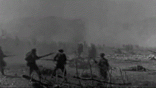
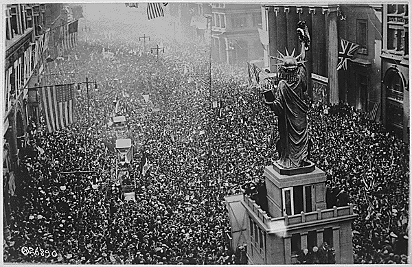
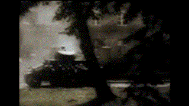
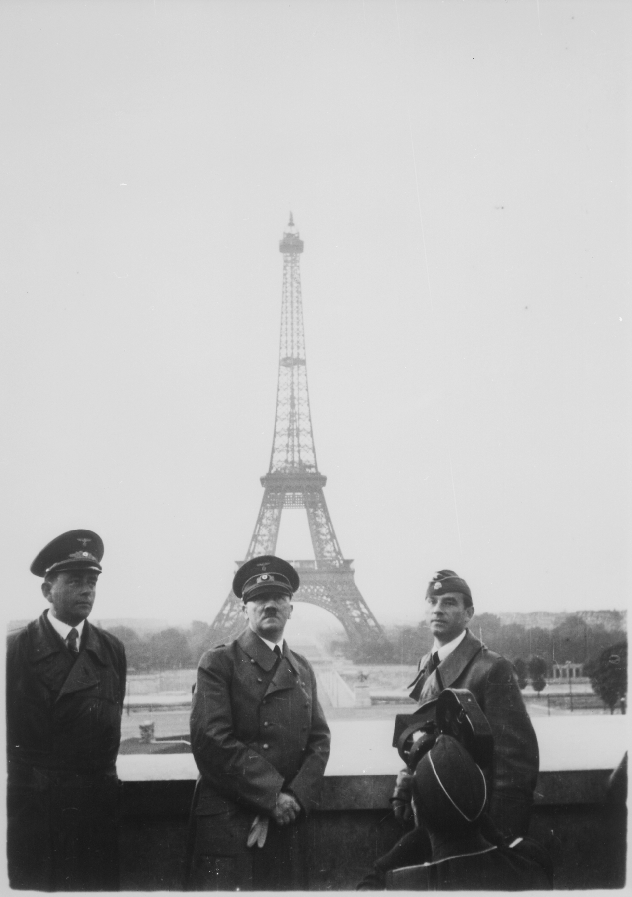
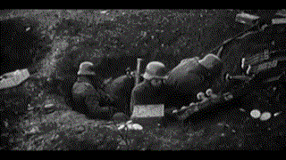
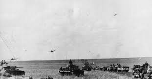
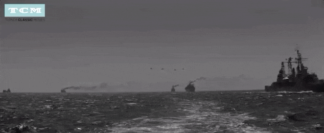
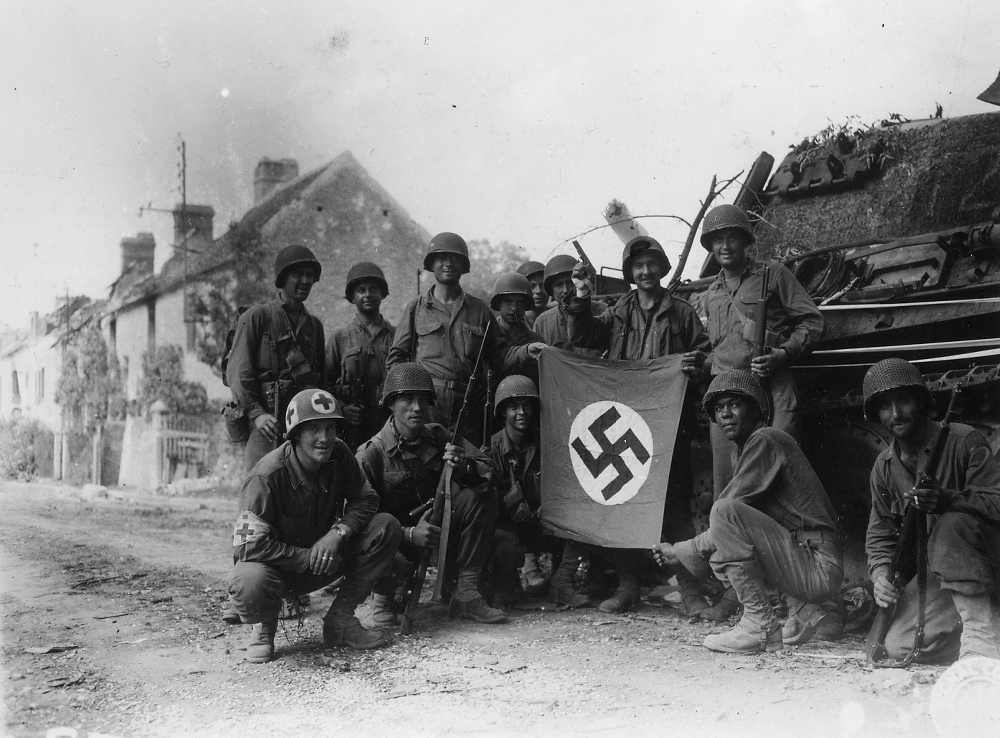
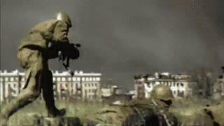
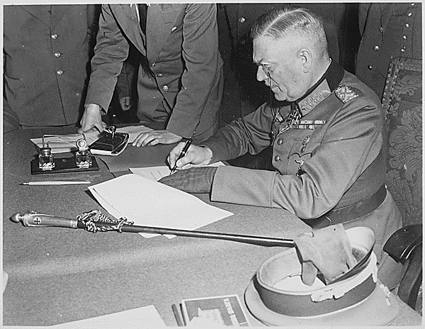

1914 - Assassination of Archduke Franz Ferdinand
In June 1914, Archduke Franz Ferdinand of Austria was assassinated in Sarajevo, a Serbian nationalist an event that would trigger the outbreak of World War I.
Chain Reaction That Led to War:
- Austrian-Hungary blamed Serbia and declared war.
- Russia supported Serbia and mobilized its army.
- Germany supported Austria-Hungary and declared war on Russia.
- Germany declared war on France.
- Germany invaded Belgium to attack France.
- Britain entered the war to defend Belgium.



This is the end of World War I
The signing of the Treaty of Versailles in 1919 officially ended World War I.










End of Hitler and the Third Reich
Adolf Hitler died by suicide on April 30, 1945, as Soviet forces closed in on Berlin. His death marked the end of the Nazi regime and World War II in Europe.